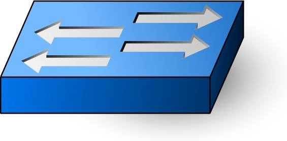

by Vipul Vichare
by Vipul Vichare When looking at networking basics, understanding how a network operates is the first step to understanding routing, switching, and wireless. The network operates by connecting computers and peripherals using switches, routers, and access points. These devices are the essential networking basics that allow the various pieces of equipment connected to your network to communicate with one another, as well as with other networks.
To understand something in the networking world, you have to understand the problem it’s trying to solve. Memorizing the configuration options for a certain routing protocol won’t help you until you understand what it’s really doing. This installment of Networking 101 is designed to be a gentle introduction into the world of routing issues and concepts, arguably the most interesting and important part of networking, explaining the problems routing protocols address so you can understand why they do what they do.
Before we get into the details, a clarification. When you hear people refer to "non-routable addresses," they are talking about RFC 1918 IP addresses, i.e. private addresses. Despite the misleading label, they certainly are routable. You can and should have some 10.x.x.x networks for local access and management. They can even be co-mingled with your real routers. They are called “non-routable” because the Internet routers will drop them
Switching, as applied to networking and IT, is the practice of directing a signal or data element toward a particular hardware destination. Switching may be applied in various formats and can function in diverse ways within a greater network infrastructure.
Switching hardware pieces or switches can operate in different ways. These devices can use multiple layers of the Open Systems Interconnection (OSI) model for data. A switch that uses more than one layer is a multi-layer switch. An example of a switching setup includes a residential gateway, which is used by Internet Service Providers (ISP) and other parties to deliver a signal to an individual destination, such as a home or piece of property. Another example is an Ethernet LAN, which uses a media access control (MAC) address to route data to a specific workstation. Some experts contrast the switch with the less precise hub, which delivers a signal to all linked destinations in the LAN or other network.
 Switches map the Ethernet addresses of the nodes residing on each network segment and then allow only the necessary traffic to pass through the switch. When a packet is received by the switch, the switch examines the destination and source hardware addresses and compares them to a table of network segments and addresses. If the segments are the same, the packet is dropped or “filtered”; if the segments are different, then the packet is “forwarded” to the proper segment. Additionally, switches prevent bad or misaligned packets from spreading by not forwarding them.